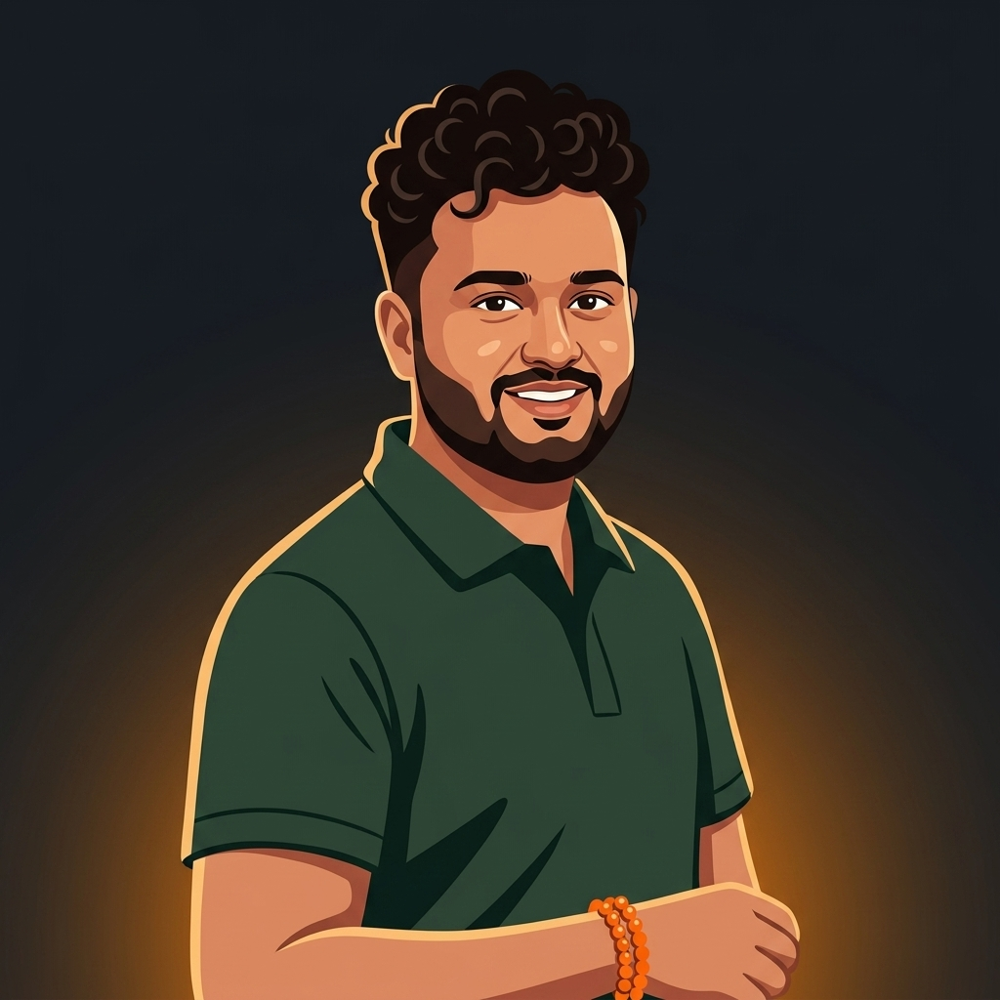

Building production-grade CV systems at scale — from training YOLO models to deploying live inference across 100+ retail cameras.

It started with curiosity. As a kid I was always the one who wanted to know how things worked — taking apart gadgets, figuring out why software crashed, wondering what happened inside the screen. Computers weren't just machines to me, they felt like puzzles worth solving.
That curiosity led me to pursue an MS in Computer Science at George Mason University, where I got serious about machine learning and systems design. It was there I realized computer vision was the intersection I'd been looking for — making machines see and understand the world, not just process it.
My first professional chapter was at Cognizant, where I learned the discipline of production systems — ETL workflows, data integrity at scale, and what it actually means to keep data pipelines running reliably day after day.
Now at Sam's Club, I get to apply all of it — from training YOLO models to deploying them across 100+ live retail cameras. Every day is a different engineering problem, and I love that.
Outside of work? I'm probably in the kitchen. I genuinely love cooking and experimenting with new recipes — I approach it the same way I approach ML: try something, see what the results look like, tweak the parameters, iterate. Some experiments are great. Some go in the bin. Both teach you something.
End-to-end systems built for production — not just demos.